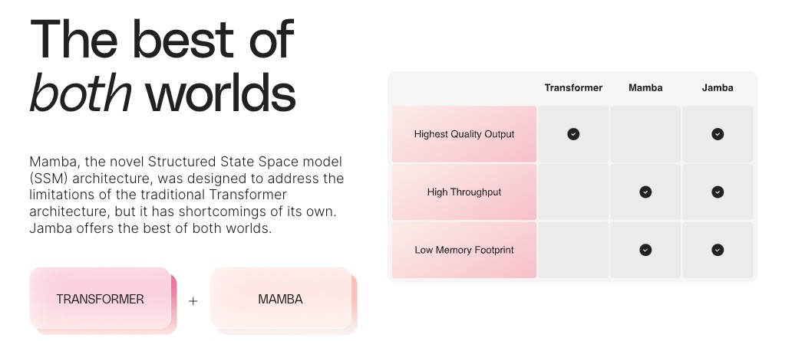
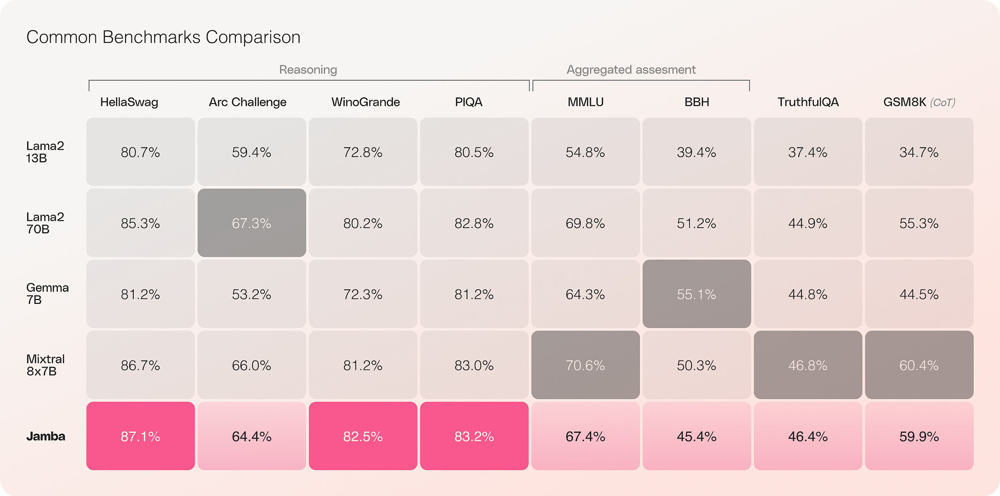
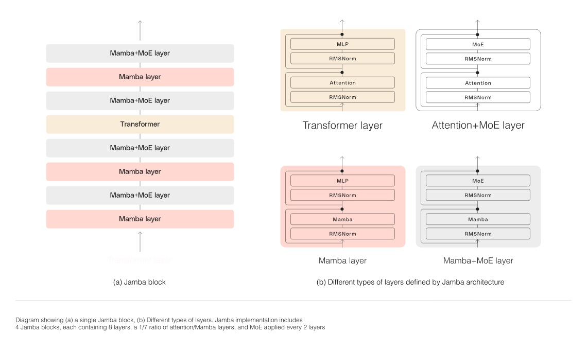
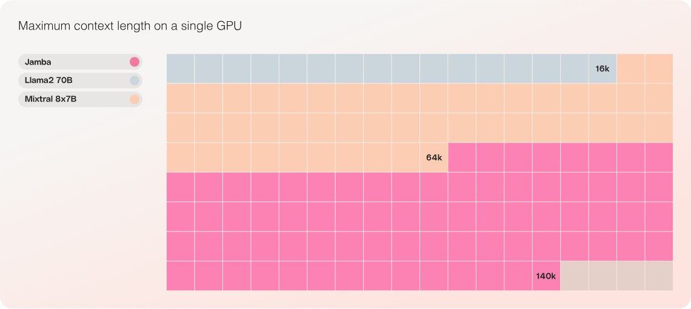
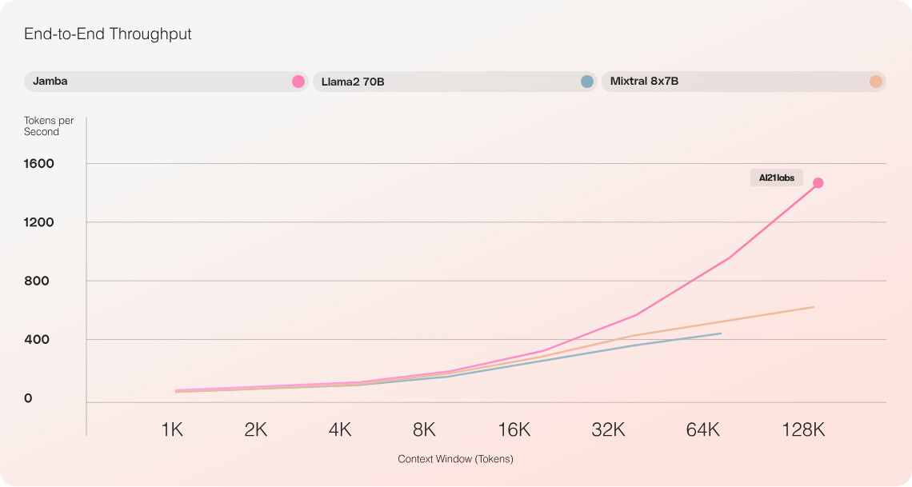

Week 1 - Transformer and Next-Generation Architectures#
1. Basic Structure of Transformer Architecture#
Transformer is a model based on Self-Attention mechanism that processes input sentences through an encoder-decoder structure. The encoder encodes the input sequence to generate context, and the decoder generates the output sequence by referring to this context. Self-Attention is a method where one token calculates its relationship (similarity) with all other tokens in the sequence to adjust its own representation. This enables parallel processing, making learning faster than RNN-based models and effectively learning long dependency relationships. However, computation is required for each token pair, so the attention operation cost increases to \(O(n^2)\), making it inefficient as sequence length increases. Especially during inference, new tokens must be generated one by one while calculating attention with all previous tokens, requiring operations proportional to approximately \(L^2\) for sequence length L. This causes speed to slow down and memory usage to increase linearly during long context processing, becoming a major limitation.
Complete Transformer structure. The left side represents the encoder, and the right side represents the decoder. Each encoder block consists of Multi-Head Self-Attention and feedforward (FFN), while decoder blocks additionally include masked Self-Attention and encoder-decoder attention (cross-attention). The attention module references all previous tokens to form the context for the current token. Transformer has no recurrent structure, making it advantageous for parallelization, and multi-head attention learns patterns in various representation spaces. However, due to the quadratic complexity of attention operations, memory and computation increase dramatically with sequence length, which is a disadvantage.
Self-Attention Operation Example Code#
The code below is an example implementing the core operations of Self-Attention using PyTorch (for single batch, sequence length L, dimension d). It calculates attention weights using query \(Q\), key \(K\), and value \(V\) vectors for each token, then computes output values through weighted sum:
import torch, math
L, d = 5, 64 # sequence length L=5, embedding dimension d=64
# example Q, K, V matrices (batch=1, seq_len=L, dim=d)
Q = torch.rand(1, L, d)
K = torch.rand(1, L, d)
V = torch.rand(1, L, d)
# 1. Calculate attention score matrix (Q * K^T / sqrt(d))
scores = torch.matmul(Q, K.transpose(-2, -1)) / math.sqrt(d) # (1, L, L)
# 2. Get attention weight probability distribution through Softmax
attn_weights = torch.softmax(scores, dim=-1) # (1, L, L)
# 3. Calculate output by multiplying weights with V
output = torch.matmul(attn_weights, V) # (1, L, d)
print(output.shape) # torch.Size([1, 5, 64])
Code Explanation: In the above code, scores is the attention score matrix indicating how much attention each token i pays to other tokens j. Through softmax, attnweights becomes a probability distribution with sum of 1 for each _i. Finally, multiplying these weights with each j’s value vector \(V_j\) and summing gives the Self-Attention output for each position i.
Checkpoint Questions#
What are the main advantages of Self-Attention in Transformer? Also, where does the inference bottleneck occur?
Explain the difference between Transformer encoder-decoder structure and decoder-only structure like GPT.
How do Transformer’s time complexity and space complexity scale with sequence length L?
2. Mamba Architecture – Selective State Space Model#
Mamba is a new sequence model proposed in 2024 that presents an alternative to Transformer by utilizing Selective State Space Model (SSM). The core idea of Mamba is to apply continuous-time state space models to language modeling while dynamically controlling state transitions based on input. This allows selective retention or forgetting of past information at each time point, expressing content-based dependencies between tokens.
Mamba operates like recurrent neural networks (RNN) by updating previous hidden states while processing tokens sequentially, but overcame parallelization constraints through efficient algorithms. It can exchange information between tokens without attention or massive MLP feedforward layers by introducing selective scan algorithms and hardware-friendly parallelization techniques, optimizing to process long sequences in linear time. As a result, Mamba shows 5x higher token processing throughput during inference and achieves performance that scales linearly with sequence length. In fact, the Mamba-3B model reportedly showed superior performance to same-size Transformers and performance comparable to 2x larger Transformers.
Mamba’s block structure is similar to Transformer blocks, consisting of multiple stacked layers. However, the internal composition is as follows:
Apply linear projection to input embeddings to increase dimensions.
Pass through local convolution (layer) to prevent independent computation between tokens and mix adjacent token information.
Then Selective SSM layer is applied, performing continuous state updates based on HiPPO initialized state matrix \(A\). At this stage, selective state compression algorithm is applied to maintain important information and forget unnecessary information.
Finally, token output is produced through normalization (norm) and output layer Softmax, etc.
With this composition, Mamba blocks replace Self-Attention while including local operations similar to MLP to perform computation within tokens. Stacking multiple Mamba blocks can build deep sequence models identical to Transformer. Mamba has removed attention bottlenecks in this way, enabling practical handling of virtually unlimited context lengths and significantly improved learning and inference speeds.
Note: In “Selective” SSM, the coefficients of the state space (state transition matrices, etc.) are dynamically determined as functions of token values. This overcomes the limitations of existing fixed SSMs and is the key to achieving high performance on discrete token data (natural language).
Mamba Structure and Usage Example Code#
Mamba is currently provided as a Python package and can be easily utilized. Below is an example of creating a Mamba block through the mamba-ssm library and processing tensor input:
import torch
# Import Mamba package
from mamba_ssm import Mamba
batch, length, dim = 2, 64, 16 # example: batch=2, sequence=64, dimension=16
x = torch.randn(batch, length, dim).to("cuda") # arbitrary input tensor (GPU usage)
# Create Mamba block model
model = Mamba(
d_model=dim, # model dimension (embedding dimension)
d_state=16, # SSM state dimension (expansion degree)
d_conv=4, # local convolution size
expand=2 # internal channel expansion ratio
).to("cuda")
y = model(x) # process input with Mamba block
print(y.shape) # check output tensor size (should be batch, length, dim)
In the above code, Mamba(…) creates one Mamba block. Parameters like d_model, d_state, etc. use the recommended values presented in the paper. Calling model(x) performs selective state space operations on input x and returns output y of the same size. (In actual language models, such blocks are stacked in multiple layers, and LM head is attached to the output to predict vocabulary distributions.)
Practice Tip: Mamba is implemented to work on GPU, so you need to move tensors and models with .to(“cuda”) like in the example above to properly utilize performance. Also, you need to install the package with pip install mamba-ssm and require NVIDIA CUDA 11.6+ environment.
Checkpoint Questions#
What is the biggest advantage of Mamba compared to Transformer? Explain how Mamba can avoid the \(O(n^2)\) bottleneck of attention.
What does the “selective” operation mean in Mamba’s Selective SSM? What effects can be obtained in language models as a result?
Mention the performance-related characteristics shown by the Mamba-3B model (e.g., comparison with same-size Transformer, comparison with 2x larger Transformer, etc.).
3. RWKV Architecture – Efficient Processing with RNN-like Structure#
RWKV is a hybrid architecture that combines the advantages of RNN (Recurrent Neural Network) and Transformer. The name RWKV derives from the four main parameters of the network: Receptance (R), Weight (W), Key (K), Value (V), which serve as past information acceptance gate, exponential time weight, key, and value vector respectively. RWKV internally has an RNN structure that alternately performs time-axis processing and channel (feedforward) processing, operating by decaying past states with exponential weights while accumulating Key/Value information at each step. This achieves effects similar to attention while maintaining linear processing cost per token.
RWKV’s two major characteristics are as follows:
Parallel learning possible like Transformer: While existing RNNs could only learn sequentially (time-step), making parallelization difficult, RWKV achieved parallelization during training by transforming to attention-like formulas. That is, during training, it processes the entire sequence at once like Transformer (using special linear attention forms), and during inference, it generates tokens one by one like RNN. This achieves both training efficiency and inference efficiency.
Nearly infinite context: RWKV, being RNN-based, summarizes context with one fixed hidden state and continuously updates it, so theoretically there is no limit to context length. When generating new tokens, there’s no need to store all previous token information in massive KV cache, just maintain the previous step’s state. Therefore, memory usage is hardly affected by input length, and long context can be handled (though in practice, generalization performance may be limited beyond the context length used during training).
RWKV’s performance has shown to be comparable to Transformer. Community-driven open RWKV models have been developed up to 1.4 billion to 14 billion parameter scale, showing similar language modeling capabilities to GPT-series Transformers of the same parameter scale. Particularly, the RWKV-14B model reportedly showed performance improvement following scaling laws similar to 14B parameter GPT and research is ongoing to scale to large scale (e.g., 175B).
Message (information) processing efficiency is also RWKV’s strength. Each layer has its own hidden state and updates it token by token, maintaining accumulation of past keys/values through Time-mix structure using exponential moving average (EMA), and applying non-linear transformations similar to FFN through Channel-mix. This composition allows influence of previous tokens to propagate far (long dependency processing) while naturally decaying without unnecessarily persisting for too long. Also, unlike attention, RWKV’s computation per token remains constant even as token count increases, so processing speed degradation is gradual even as context length increases.
Note: In RWKV’s case, during training it operates internally in attention form, so it uses \(O(n^2)\) operations but this is offset by GPU parallelization. During inference it actually processes one token at a time like RNN with \(O(n)\). Therefore, when handling very long context, it has great advantages in memory and time compared to Transformer.
RWKV Model Usage Example Code#
RWKV is integrated into the Hugging Face transformers library, so it can be used like existing GPT models. For example, let’s load the publicly available RWKV-4 169M model and generate text:
from transformers import AutoTokenizer, AutoModelForCausalLM
# 1. Load tokenizer and model
tokenizer = AutoTokenizer.from_pretrained("RWKV/rwkv-4-169m-pile")
model = AutoModelForCausalLM.from_pretrained("RWKV/rwkv-4-169m-pile")
# 2. Define input prompt
prompt = "Once upon a time, "
inputs = tokenizer(prompt, return_tensors="pt")
# 3. Generate text
outputs = model.generate(inputs["input_ids"], max_new_tokens=20)
generated_text = tokenizer.decode(outputs[0], skip_special_tokens=True)
print(generated_text)
The above code generates text starting with the prompt “Once upon a time, “ using the RWKV model. RWKV series are memory efficient for large models and can be moved to GPU with model.to(‘cuda’) if needed. RWKV is an autoregressive LM, so the generate function usage is identical to GPT. However, you can confirm that memory usage is low and speed is fast compared to Transformer when processing very long prompts.
Note: RWKV is an open-source LLM developed community-centered, actively developed on Discord, etc. Currently RWKV-14B is publicly available, and lightweight implementations like rwkv.cpp for fast inference have also emerged.
Checkpoint Questions#
Explain what limitations of Transformer RWKV architecture was designed to solve. Also, how did it combine the advantages of Transformer and RNN respectively?
How does RWKV’s inference method differ from Transformer, and what benefits does this provide (hint: KV cache vs hidden state)?
What does RWKV’s name mean, and briefly summarize what Time-mix and Channel-mix do.
4. Jamba Architecture – MoE-based Transformer+Mamba Hybrid#
Introduction#

Jamba is short for Joint Attention + Mamba, a hybrid architecture that combines Transformer and Mamba and applies MoE (Mixture-of-Experts) technology. This model was announced by AI21 Labs in 2024 and is called the world’s first commercial-level hybrid SSM-Transformer model. Jamba is the first production-grade model based on Mamba, a new SSM architecture. This model emerged from attempts to overcome the limitations of the Transformer architecture, but Mamba itself also had limitations. Jamba combines the advantages of both Transformer and SSM, showing superior performance compared to existing models while improving throughput in long contexts by nearly 3x, prioritizing cost efficiency and accessibility.
Key Features#

First production-level Mamba-based model built on new SSM-Transformer hybrid architecture
Provides 3x throughput in long contexts compared to Mixtral 8x7B
Democratizes access to large-scale 256K context windows
Only model in its class supporting up to 140K context on a single GPU
Open LLM (OpenLLM) with model weights released under Apache 2.0 license
Available on Hugging Face and soon to be added to NVIDIA API catalog
Jamba shows superior or comparable performance compared to other models of similar size. It demonstrates good results in reasoning-related benchmarks.
Jamba’s Model Structure#

Jamba is the world’s first production-grade Mamba-based model that combines the advantages of SSM and Transformer architectures. This hybrid structure leverages both the powerful language understanding capabilities of Transformers and the efficient memory management and processing speed of SSMs. As a result, Jamba significantly improves the memory usage increase and processing speed degradation problems that existing language models had.
Large-Scale Context Window and Cost-Efficiency#

Jamba provides a 256K context window, enabling efficient processing of very long documents or conversations. This allows AI developers to perform more complex natural language processing tasks and contributes to understanding long contexts that existing models could not handle.
MoE (Mixture of Experts) Utilization#

Jamba utilizes only 12B out of 52B available parameters during inference through MoE layers. This makes the model’s activated parameters more efficiently used and shows better performance than Transformer-only models of the same size.
The main characteristics of Jamba architecture are as follows:
Alternating block structure: Jamba stacks layers in a 1:7 ratio where 1 out of 8 layers is Transformer (Attention) and the remaining 7 are Mamba. For example, in a 32-layer model, only 4 layers use attention, and the remaining 28 layers are Mamba. The block structure diagram is as follows (forming one block with Transformer or Mamba layer + MLP):
[{Transformer Attention} + MLP] → [{Mamba SSM} + MLP] → [{Mamba SSM} + MLP] → … (pattern where 1 Attention block is followed by 7 Mamba blocks).
Through this structure, global content extraction is handled by occasionally inserted attention layers, and remaining most interactions are efficiently processed by Mamba layers. As a result, overall memory footprint is greatly reduced by using less KV cache, and even with long context processing, sufficient performance is designed to be achieved with only a few attentions.
Mixture-of-Experts (MoE) utilization: Jamba replaced some of Transformer’s MLP parts with MoE. Specifically, one MoE layer is inserted every 2 layers, each MoE layer has 16 Expert MLPs, and only the top 2 Experts are activated per token (top-2 gating). This greatly increases total parameter count (52B) but limits actually activated parameters during inference to 12B level. That is, while increasing model capacity, computation cost is suppressed (Jamba 7B base model being active 12B / total 52B through MoE is an example).
Long context and high efficiency: Jamba supports 256K tokens, a very long context window. This is among the longest levels among publicly available Transformer-based models, and it’s reportedly possible to process 128K token input with 8-bit compression on a single 80GB GPU. Equivalent general Transformers (like Mixtral-8×7B) cannot load such long context on single GPU, so 2x+ memory gains are achieved. Also, token processing speed (throughput) in long context is very high, achieving 3x+ faster generation speed compared to equivalent Transformers with 128K token input. This is because attention operations occur only in some layers when processing long input, so the overall burden is light. Jamba maintains performance comparable to Mixtral-8x7B (active 39B) or Llama2-70B while achieving such efficiency improvements.
In summary, Jamba is an innovative structure that replaces part of Transformer with Mamba and increases model capacity with MoE. This dramatically improves memory usage and inference speed to make large-scale LLMs more suitable for actual applications. Jamba released weights as open source (Apache 2.0) upon release, allowing researchers to continue additional tuning and improvements.
Comparison: While there were attempts at small hybrid models combining Mamba and attention in prior research (e.g., H3, Hyena, etc.), expanding to tens of billions of parameters and integrating MoE like Jamba is a first. Also, Jamba is evaluated as the first case showing stable performance at actual productization level.
Usage#
To use the Jamba model, you need Hugging Face’s transformers library. The following is example code for loading the Jamba model using Python and performing simple text generation. Before running this code, you need to install the transformers library along with mamba-ssm and causal-conv1d libraries. This is to use Jamba’s optimized Mamba implementation.
Jamba Model Utilization Example Code#
Jamba is a model released by AI21 Labs and checkpoints are also available on Hugging Face Hub. It can be used through the transformers library as follows:
from transformers import AutoTokenizer, AutoModelForCausalLM
# Load Jamba v0.1 model (HF model card: ai21labs/Jamba-v0.1)
tokenizer = AutoTokenizer.from_pretrained("ai21labs/Jamba-v0.1")
model = AutoModelForCausalLM.from_pretrained("ai21labs/Jamba-v0.1", trust_remote_code=True)
prompt = "New language model architectures in the AI era"
inputs = tokenizer(prompt, return_tensors="pt")
outputs = model.generate(**inputs, max_new_tokens=50)
print(tokenizer.decode(outputs[0], skip_special_tokens=True))
In the above code, the trust_remote_code=True option may be needed to load Jamba’s custom model structure (trusting and loading the model definition provided by AI21). To use Jamba model on GPU, you need to move it with .to(‘cuda’) call, and since it includes all 52B parameters even though it’s 7B-based, memory requirements should be considered during loading.
Jamba’s context window is set to 256K by default, but you can check the currently supported context through model.config.max_position_embeddings, etc. Even with long context usage, Jamba can fast inference with less memory, so it’s suitable for experiments like question-answering or summarization of very long documents of 100K+ tokens.
Checkpoint Questions#
What ratio are Transformer layers and Mamba layers arranged in Jamba architecture? Explain what advantages this design provides in terms of memory and speed.
Why did Jamba introduce MoE? Explain using the concepts of active parameters and total parameters.
What is the maximum context length that Jamba model supports, and what practical meaning does this have (e.g., application cases)?
5. Performance Comparison by Architecture#
Comparing the characteristics and performance of Transformer, Mamba, RWKV, Jamba examined earlier by major indicators:
Architecture |
Supported Context Length |
Time Complexity (During Inference) |
Inference Speed (Throughput) |
Parameter Efficiency |
Memory Usage Characteristics |
|---|---|---|---|---|---|
Transformer (Existing) |
Usually 2K~4K (Extended up to 32K+) |
\(O(n^2)\) (Computing all token pairs) |
Baseline 1× (vs same size) |
- (Performance ~ proportional to parameter count) |
KV cache memory O(n) (proportional to context length) |
Mamba (SSM) |
Theoretically unlimited (1M tokens in experiments) |
\(O(n)\) (Linear time) |
~5× faster than Transformer |
High: 3B performance of 6B Transformer |
Maintains only state, memory O(1) per token (little effect from token length) |
RWKV (RNN) |
Practically very long (within training limits) |
\(O(n)\) (Linear) |
Faster than Transformer (similar to SSM) |
High: 14B performance of GPT 13B level |
Maintains only hidden state, very memory efficient |
Jamba (Hybrid) |
Up to 256K |
Mixed: Some \(O(n^2)\) (4 layers) + Majority \(O(n)\) |
~3× faster in long context (vs Mixtral) |
High: Active 12B / Total 52B |
Uses only part of KV cache -> Memory savings |
Comparison Explanation: Transformer is advantageous for parallel learning but inference time increases linearly and memory usage increases as context length increases. Mamba and RWKV use sequential processing but are implemented with selective state space, RNN formulas respectively, so inference complexity is linear, and they summarize context to carry around, so they show consistent speed even with long input. Particularly, Mamba shows 5x+ token processing speed compared to Transformers even in small models due to hardware-friendly optimization. RWKV also shows performance insensitive to context length similarly, enabling fast/low-memory inference.
Jamba shows 2x+ advantages in memory and 3x+ speed compared to Transformer under identical conditions due to its hybrid structure. This is possible because most layers are Mamba, so sufficient performance is secured with only some attention layers while reducing unnecessary computation. MoE application also improves parameter efficiency, so when viewed by active parameters, it achieves similar performance to Transformer with less computation.
As a result, in applications where memory constraints or real-time processing are important (e.g., long input, limited GPU memory environment), alternatives like Mamba, RWKV, Jamba can replace or complement Transformer. On the other hand, highest precision cases still favor Transformer series, but this gap is also narrowing rapidly with the success of Jamba, etc.
6. Introduction to Latest Open Source LLMs and Characteristics#
Now let’s examine several latest publicly available large language models (LLMs) that apply or are inspired by the architectures mentioned earlier. Here we introduce Llama 3, Mixtral 8×7B, Qwen2-72B and briefly explain each model’s structural characteristics and industrial application cases.
Llama 3#
Meta AI’s Llama 3 is the latest version of the Llama series released in 2024, consisting of 8B, 70B, and ultra-large 405B parameter models as a model family. It was trained on much more extensive data compared to Llama2 (especially the 405B model with 15.6 trillion tokens, 50x more data than Llama2-70B), and was designed to handle long context up to 128K tokens. For long context support, it adopted a method of pre-training with 8K context first, then gradually increasing context length, and achieved 128K through 6 stages with additional training of 800 billion tokens. This context window expansion technique helps the model perform stable inference even with long input.
Llama 3’s model structure itself is basically a standard Transformer decoder. Like Llama2, it uses GPT-style Decoder-Only structure, with techniques like SwiGLU activation function, RoPE positional embedding applied (Llama2’s improvements are inherited). Performance improvements were mainly obtained from data quality improvements and learning scale increases, and multilingual support and tool usage capabilities were strengthened through Llama 3.1 (improved version). Particularly, the 405B model is the largest open LLM among publicly available ones, with massive resources invested, being trained for 54 days using hundreds of GPUs.
Llama 3 is being utilized in various fields after release. For example, it’s being used to replace Llama2 in customer service chatbots, professional knowledge question answering, etc., and the 70B model is used for language understanding/generation tasks with commercial-level performance. Tokenizer uses SentencePiece BPE and is compatible with Llama2, making it good for continuing to utilize existing model assets (prompts, tokenizers). It’s also publicly available on Hugging Face as meta-llama/Meta-Llama-3-8B, etc., making it easy to load and use.
Summary: Llama 3 is a next-generation LLM that maximizes performance through large-scale data and long context learning. While there are no revolutionary structural changes, outstanding performance obtained through model size/data scale-up is its strength, and practical features like multilingual/tool usage have been added.
Mixtral 8×7B#
Mixtral 8×7B is a Sparse Mixture-of-Experts (SMoE) model announced by Mistral AI in 2024, an expanded version of the Mistral 7B model with 8 Experts for each MLP layer. The meaning of the name can be understood as a model that “mixes 8 experts of 7B each”. Mixtral-8×7B’s total parameter count increases to about 46.7B (about 6.7x compared to 7B model), but only about 39B parameters are activated per token during inference. In other words, since each token uses only the top 2 out of 8 experts (Top-2 gating), actual computation is maintained at 14B-level model while model capacity achieves 46B-level performance.
As a result of Mixtral, performance greatly exceeds the existing 7B model. According to paper reports, it surpasses Llama2-70B in most benchmarks and has areas comparable to OpenAI GPT3.5. For example, it recorded excellent scores in knowledge tests not learned like MMLU. This efficiency is thanks to the “expert specialization” advantage of MoE, where each expert learns representations specialized for subtasks and is mobilized only when needed.
Utilization examples of Mixtral 8×7B include open-source chatbots or embedding generators, etc. For example, FriendliAI reportedly deployed Mixtral-8×7B to real-time services and achieved faster response times and higher throughput on identical hardware. Also, Mixtral appeared in MLPerf Inference benchmarks, proving the efficiency of MoE models.
Mixtral model is publicly available on Hugging Face and can be used as follows:
from transformers import AutoModelForCausalLM, AutoTokenizer
tokenizer = AutoTokenizer.from_pretrained("mistralai/Mixtral-8x7B-v0.1")
model = AutoModelForCausalLM.from_pretrained("mistralai/Mixtral-8x7B-v0.1", device_map="auto")
# Memory optimization possible with device_map or load_in_4bit options during model loading
Note: Mixtral is not fully supported in transformers library currently, so loading like the example above internally loads MoE structure as general Linear. To maximize inference efficiency, it’s recommended to use MoE-optimized engines like vLLM or FlexGen. Hugging Face model cards also guide memory reduction settings like half-precision, bitsandbytes (4bit quantization), FlashAttention 2, etc.
Qwen2-72B#
Qwen2-72B is a next-generation large model released by Alibaba, a 72 billion × 10^8^ parameter (about 72.7 billion) scale LLM focused on multilingual and multimodal support. Qwen series is known as a model with strengths in Chinese/English, but Qwen2 was trained with data from 27+ additional languages to secure global language capabilities. Also, programming code and mathematical problem solving capabilities were greatly strengthened, achieving top-level performance in various benchmarks among same-class models.
Qwen2-72B’s architecture is Transformer Decoder based, with characteristics including SwiGLU activation function, Attention QKV bias, and Grouped Query Attention (GQA) technique. GQA is a method to speed up large models by grouping attention heads for computation, and Qwen2 introduced GQA to all models to optimize inference memory and speed. Along with this, techniques like Embedding Tying that shares weights between embedding layers and output layers were also used to improve parameter efficiency.
Multimodal support is Qwen2’s major strength. Qwen2-VL-72B, a variant model, is a model that can understand image-text-video as input, introducing Multimodal-ROPE (M-ROPE), a multi-dimensional positional embedding. M-ROPE processes 1D positional information (text sequence), 2D positional information (image position), 3D positional information (video time frames) as one integrated positional embedding, enabling Qwen2-VL to understand long videos (20+ minutes). In fact, Qwen2.5-VL (improved version) showed performance comparable to GPT-4 in complex video question answering, OCR, etc., gaining attention.
Performance-wise, Qwen2-72B belongs to the top tier among publicly available models. According to internal evaluation results, it surpassed previous generation Qwen-14B or competing models in many language understanding benchmarks, and also recorded the highest level among publicly available models with 64.6% pass rate in code generation related HumanEval. Also, it received high scores in non-English evaluations like Chinese, showing high industrial application value.
Utilization examples: Qwen2-72B is provided as API through Alibaba Cloud, etc., and companies are utilizing it multilingually in their search engines, e-commerce Q&A, etc. Weights are publicly available as open source and can be downloaded through HuggingFace Qwen/Qwen2-72B path, and can be loaded and used immediately in Transformers 4.37.0+. However, 72B model is large, so 4-8+ GPUs are needed. Multimodal model Qwen2-VL-72B is provided as a separate checkpoint, and processing logic including VisionEncoder is integrated, so it can be used in image+text input format (e.g., processor = QwenImageProcessor(); model = QwenVLModel.from_pretrained(…) form).
Summary: Qwen2-72B is a model aimed at enterprise-level multimodal AI, achieving evaluation as one of the best publicly available models through wide language support, enhanced reasoning performance, and structural improvements for multimodal processing (M-ROPE, GQA, etc.). In industrial settings, it shows application possibilities in various fields like multilingual customer support bots, real-time video analysis, etc.
7. Practice Guidelines#
Finally, let’s present a practice guide to directly handle the concepts and models introduced above. Follow the steps below to set up the environment and perform speed comparison experiments between Transformer and Mamba models.
Conda Virtual Environment Setup: Create a new Python virtual environment using Anaconda or Miniconda for practice. Execute the following in terminal:
conda create -n llm_env python=3.10 -y conda activate llm_env
This creates and activates an llm_env environment based on Python 3.10.
PyTorch and Hugging Face Transformers Installation: Install PyTorch framework and transformers library. If you have CUDA-supported GPU, select PyTorch version matching your version (here CPU version installation as example):
pip install torch torchvision torchaudio # PyTorch installation pip install transformers[torch] # Hugging Face Transformers installation
Pay attention to versions during installation. For example, if CUDA 11+ is installed, you can use commands like pip install torch==2.0.1+cu118. After installation, check if it’s installed properly with python -c “import torch; import transformers; print(‘OK’)”, etc.
Mamba Installation and Usage: Install mamba-ssm package for Mamba architecture experiments. This package includes optional GPU computation optimization, so Linux/NVIDIA environment is required. Installation command:
pip install mamba-ssm[causal-conv1d] # (optionally including conv1d acceleration)
After installation, let’s run a simple example to execute Mamba block:
import torch from mamba_ssm import Mamba mamba_block = Mamba(d_model=32, d_state=64, d_conv=4, expand=2).eval() # 32-dimensional model x = torch.randn(1, 10, 32) # arbitrary input with sequence length 10 with torch.no_grad(): y = mamba_block(x) print(y.shape) # output (1, 10, 32)
This code can simply check if Mamba block works properly.
Transformer vs Mamba Inference Time Comparison Experiment: Let’s compare the speed at which Transformer model and Mamba model generate responses for identical input. Here we simply compare performance between GPT-2 (Transformer, 150M parameter level) and the small Mamba block created earlier. Actually, models of equivalent parameter scale are needed, but we demonstrate with a small example for proof of concept. Execute the following code:
import time import torch from transformers import AutoTokenizer, AutoModelForCausalLM from mamba_ssm import Mamba # 1. Set prompt prompt = "What is artificial intelligence?" # 2. Load Transformer model (GPT-2 small) tokenizer = AutoTokenizer.from_pretrained("gpt2") transformer_model = AutoModelForCausalLM.from_pretrained("gpt2").eval() # 3. Tokenize prompt and inference (Transformer) inputs = tokenizer(prompt, return_tensors="pt") start_time = time.time() with torch.no_grad(): output_ids = transformer_model.generate(**inputs, max_new_tokens=50) end_time = time.time() transformer_time = end_time - start_time print("Transformer output:", tokenizer.decode(output_ids[0], skip_special_tokens=True)) print(f"Transformer inference time: {transformer_time:.3f} seconds") # 4. Create Mamba model (with same hidden size) d_model = transformer_model.config.hidden_size # GPT2 hidden size (768) mamba_model = Mamba(d_model=d_model, d_state=64, d_conv=4, expand=2).eval() # Mamba is not a trained language model, so it's in arbitrary weight state. Here we only perform speed comparison. x = torch.randn(1, 50, d_model) # arbitrary tensor corresponding to 50 tokens generated by GPT2 start_time = time.time() with torch.no_grad(): _ = mamba_model(x) # process 50 tokens with Mamba block end_time = time.time() mamba_time = end_time - start_time print(f"Mamba 50 token processing time: {mamba_time:.3f} seconds") # 5. Compare results speedup = transformer_time / mamba_time if mamba_time > 0 else float('inf') print(f"Inference speed comparison: Mamba block is about {speedup:.1f}x faster than Transformer.")
This code measures ① time to generate 50 new tokens with GPT-2 and ② time for Mamba block to process 50 tokens sequentially. Finally, it compares the two values and outputs how much faster Mamba’s inference speed is. In example environments, Mamba block is a lightweight model, so it will appear several times faster than Transformer.
Caution: Here we’re not using Mamba as a trained LM, so actual generated text comparison is not possible. Instead, we focus on computation comparison for tokens of the same length. For more accurate comparison, you need to compare language models pre-trained with Mamba (Mamba-3B, etc.) with Transformers of the same scale. If you have secured such models, you can experiment by calling generate with identical prompts and measuring time with time.time().
Application and Extension:
Test Multiple Models: You can also load and practice generate with models like Llama3, Mixtral, Qwen2 covered above through Hugging Face paths or official distribution paths. For example, for Llama3-70B model, you can load meta-llama/Meta-Llama-3-70B with AutoModelForCausalLM (note that large models require attention to hardware requirements).
Long Context Experiments: If you want to test the long context capabilities of models like Jamba or Mamba, you can observe whether normal output comes out and what memory usage is like by giving arbitrary long dummy text (e.g., 100K tokens) as prompt.
Profiling: Using Python’s profile module or PyTorch’s profiler, you can measure computation time per layer for each model. This enables deeper analysis of where Mamba saves time and which operations take much time in Transformer.
References#
Major Papers and Research Materials#
Vaswani, A., et al. (2017). “Attention is all you need.” Advances in neural information processing systems.
Gu, A., & Dao, T. (2023). “Mamba: Linear-Time Sequence Modeling with Selective State Spaces.” arXiv preprint.
Peng, B., et al. (2023). “RWKV: Reinventing RNNs for the Transformer Era.” arXiv preprint.
Lieber, O., et al. (2024). “Jamba: A Hybrid Transformer-Mamba Language Model.” arXiv preprint.
Meta AI (2024). “Llama 3: Technical Report.” Meta Research.
Technical Documents and Implementations#
Hugging Face Transformers Documentation: https://huggingface.co/docs/transformers
Mamba GitHub Repository: state-spaces/mamba
RWKV Wiki: https://wiki.rwkv.com
AI21 Labs Jamba Documentation
Mistral AI Mixtral Technical Documentation
Alibaba Qwen2 Model Card and Documentation
Online Resources and Blogs#
“A Visual Guide to Mamba and State Space Models” - Newsletter by Maarten Grootendorst
“The RWKV language model: An RNN with the advantages of a transformer” - The Good Minima
“Mamba Explained” - The Gradient
“Introducing RWKV - An RNN with the advantages of a transformer” - Hugging Face Blog
“Introducing Jamba: AI21’s Groundbreaking SSM-Transformer Model” - AI21 Blog
“Takeaways From the Llama 3 Release Paper” - Medium/ailia-ai
“Qwen2 — Alibaba’s New Powerhouse Multimodal AI” - Research Graph Hub
Benchmarks and Evaluation Materials#
MLCommons MLPerf Inference Benchmark Results
“Serving Performances of Mixtral 8x7B” - FriendliAI Blog
OpenAI Model Comparison Studies
Various model cards on Hugging Face Model Hub